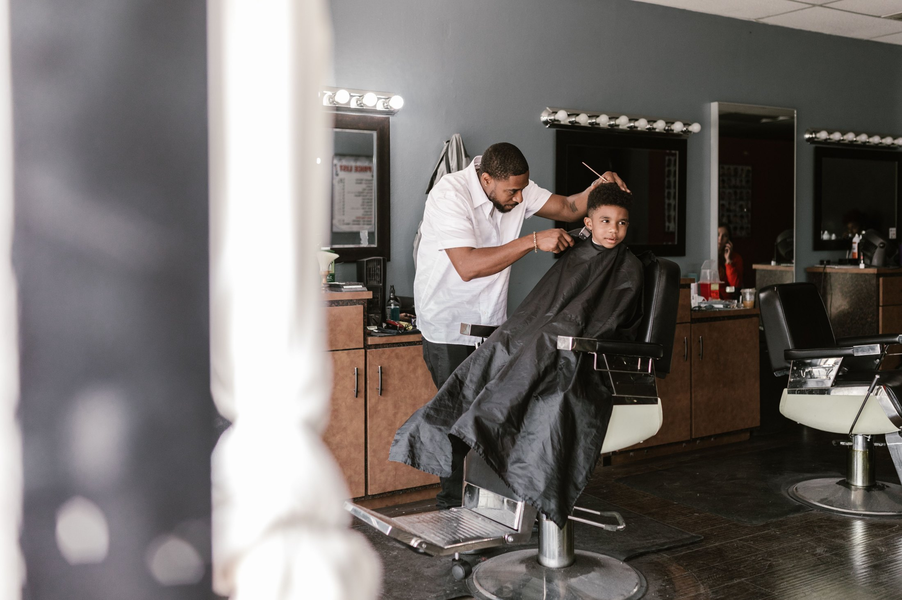
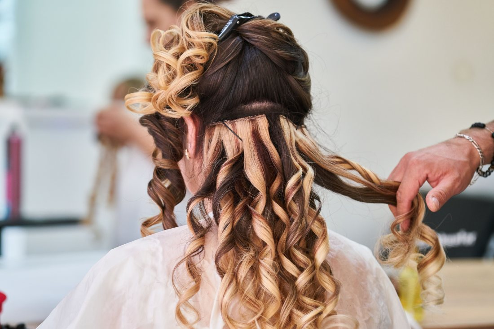
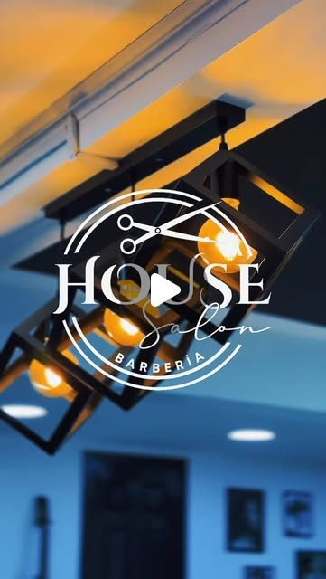
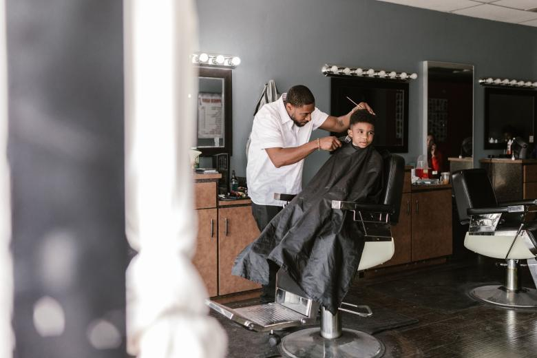
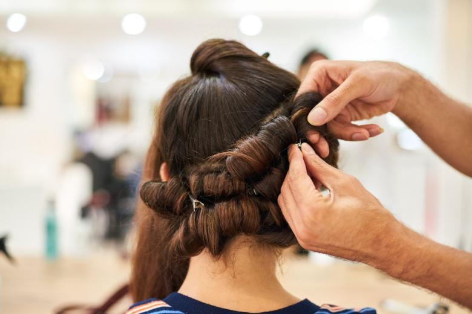

La misma persona todas las veces
En un equipo chico uno vuelve donde el mismo y no hay que explicar de nuevo cómo se quiere el corte. En un local grande, quien atiende depende del turno.
Propuesta de sitio web — preparada para House Salón Barbería por CristalWeb
El nombre lo dice todo y nadie lo está aprovechando: barbería y salón bajo un mismo techo. La pareja que podría venir junta, a la misma hora, no tiene cómo enterarse de que se puede.
Barbería y salón · Temuco
Una casa con dos salones adentro: el de barbería y el de color y peinado. Se puede venir por uno solo, como siempre — pero también se puede tomar la misma hora para dos y resolver en una salida lo que normalmente son dos tardes distintas.
Una casa, dos salones
Acá abajo van los dos lados de la casa. La página habla de servicios y no de a quién le corresponde cada uno: el que quiera un corte de barbería lo pide, y el que quiera color lo pide, y nadie tiene que explicar nada.
Salón uno
falta: la lista real y cuánto dura cada uno
Salón dos
falta: la lista real y cuánto dura cada uno
Es lo único que ningún otro local del centro puede ofrecer igual. Dos personas entran a la misma hora, cada una a su silla, y salen juntas — sin la espera de uno mirando el celular mientras el otro termina.
Y con esto hay que ser exacto, porque son dos cosas distintas: que exista la posibilidad depende de que haya dos personas disponibles a esa hora, y eso se confirma al agendar. No es «llegar y sentarse»: es pedirlo por teléfono diciendo que son dos.
falta: confirmar si se puede agendar así y con cuánta anticipación conviene pedirlo

Dos salones, una casa
Que dos personas se atiendan a la misma hora en la misma casa no se resuelve poniendo dos precios juntos. Se resuelve coordinando dos agendas: mientras uno pasa por la silla de barbería, la otra está en color, y ambos terminan cerca. Eso hay que decidirlo al reservar — y por eso hay que poder pedirlo por escrito.
Por qué se llama casa
Una peluquería de mall atiende a quince personas a la vez y funciona como una cinta. Un local chico funciona distinto, y esa diferencia es el argumento — no un consuelo.
En un equipo chico uno vuelve donde el mismo y no hay que explicar de nuevo cómo se quiere el corte. En un local grande, quien atiende depende del turno.
Con música a volumen normal y sin cinco secadores encendidos, se puede decir qué se quiere antes de que empiecen a cortar. La mitad de los cortes que no gustan empezaron sin esa conversación.
Un local que agenda de a poco puede cumplir el horario. Es una promesa chica y es justamente lo que la gente comenta después. falta: confirmar si trabajan sólo con hora agendada
Con la pareja, con un hijo, con la mamá. En una casa eso no molesta a nadie; en una cinta de producción, sí.
Esta sección describe cómo funciona en general un local chico frente a uno grande: no describe todavía este local, porque no lo conozco por dentro. Lo físico —cuántas sillas, cuántas personas atienden, si hay sala de espera— lo confirma el salón antes de publicar.
Vengan los dos. Salgan juntos.
Barbería y salón bajo el mismo techo
Para agendar — y si son dos, decirlo al llamar
Es el número publicado en su ficha de Google.

Foto publicada por la propia barbería en su Instagram. El logo va pintado en el vidrio: es su local, no una referencia.

falta: el sillón desde el frente y una foto del corte terminado. Son las dos que decide un cliente antes de reservar.
Estas seis ya aparecen más arriba en la página. Vuelven acá en otro tamaño porque una sola pasada de imágenes deja el scroll vacío, y porque de cerca se ven cosas que en grande se pierden. La procedencia de cada una está en imagenes/FUENTES.txt.


El 4,8 con 89 reseñas de su ficha de Google y el teléfono +56 9 2695 0314. No tienen sitio propio: sólo redes.
Las dos listas de servicios y los cuatro rasgos de «la casa». Son del rubro, no suyos, y van marcados.
Lo más importante es una sola respuesta: si se puede agendar dos sillas a la misma hora. Si es que sí, esa frase sola justifica la página entera. Después: las dos listas reales con duraciones, y si trabajan sólo con hora.